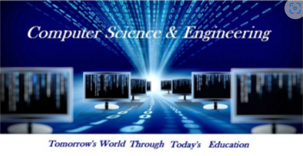
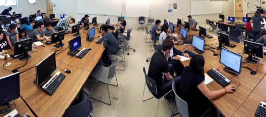

The Department of Computer Science and Engineering was started in 1986 with a vision to provide a place for Innovation, Scientific Discovery and New Technology to evolve as a Centre of Excellence for research and learning, integrating Computer and Information Sciences with Natural Sciences and Basic Engineering. The department prepares over 162 graduates (UG & PG) every year to become leaders in diverse fields such as academia, industry and government. The department also offers research programme (PhD) in various disciplines of computer science and Engineering.
 The department imparts world class training and research. The department provides state of the art computing facilities to the students. Graduates from the department are most wanted by both academia and corporates like Microsoft, Yahoo, IBM, Oracle, EMC2. All over the world, alumni of the department occupy top positions in both academia and industry especially one of the alumni occupies as Ambassador of India in Israel. Important research and technical patents are registered by our alumnus. The department has generated funds from various government organizations like AICTE, MHRD, and DST for promoting research activities and modernization.
The department has signed MOUs with companies such as Microsoft, EMC2, Robert Bosch and TCS. The objective of these MOUs is to bridge the gap between academia and industry scenario. Every year TCS recognizes department’s outstanding students by awarding “Best Student” and “Best Project” awards. The department and Oklahoma State University jointly organized and conducted an International Conference on Sensors, Security, Software and Intelligent Systems (ISSSIS 2009) during 8-10 January 2009.
Some of the major research areas which the faculty members and students working on are grid computing , cloud computing , wireless networks, database technologies , bioinformatics, image processing, software engineering data mining and web mining.
To evolve as a Centre of Excellence in research, learning and consultancy, integrating Computer and Information Sciences with Natural Sciences and Engineering concepts to develop products and services for the benefit of the Industry and Society at large.
Mission 1: To impart value based technical education and entrepreneurial skills to the graduates through state-of-art infrastructure and innovative faculty
Mission 2: To educate students towards the design and development of intelligent products and services meeting global demands and standards
Mission 3: To promote collaborative learning and research with Industry, Government and International organizations for continuous knowledge transfer and enhancement
Mission 4: To develop globally competent engineers, capable of providing secure and “Out of the Box” computing and information technology solutions
Mission 5: To enable the graduates to adapt to the rapidly changing technology with strong fundamentals